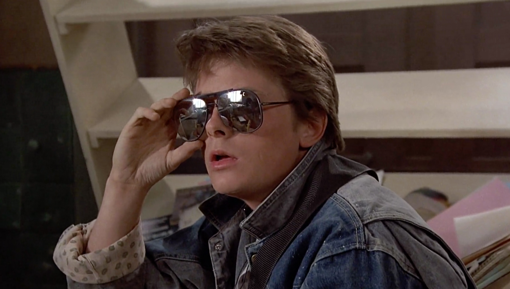
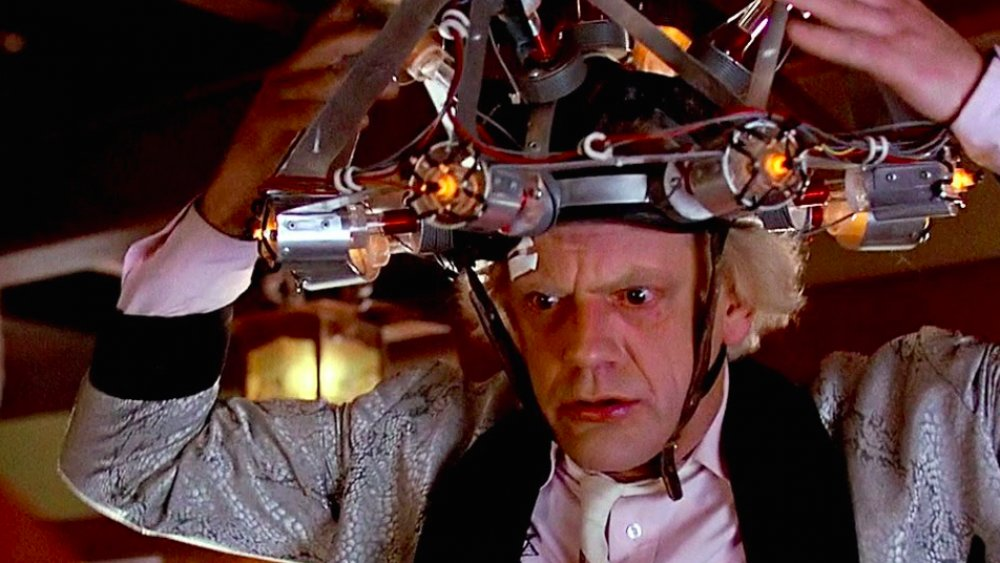

Back to the Future: Characters
Marty McFly
Portrayed by: Michael J. Fox
A teenager from Hill Valley, Marty McFly is the quintessential '80s kid with a passion for skateboarding and rock music. With a penchant for adventure and a knack for finding himself in extraordinary situations, Marty becomes the unlikely hero when he travels back in time. His quick thinking and brave heart make him the linchpin in the quest to set history right and ensure his own existence.
Doc Brown
Portrayed by: Christopher Lloyd
The eccentric inventor of the DeLorean time machine, Dr. Emmett Brown, or "Doc" Brown, is a brilliant yet somewhat scatterbrained scientist. His boundless enthusiasm for science and innovation is matched only by his wild hair and unpredictable behavior. Doc's deep friendship with Marty is central to the story, as they navigate the complexities of time travel together.